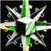
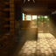

Direccion del servidor
Just Enough Items(JEI) |
Permite mirar las recetas de los objetos | |
|  | JourneyMinimap |
Minimapa en el HUD modificable |
|
Oh The Biomes You'll Go |
Mejora la generacion del mundo añadiendo nuevos biomas y zonas para explorar |
|  | BetterVillage |
Mejora el diseño y distribucion de las aldeas en el mundo |
Supplementaries |
Añade nuevos objetos para decorar a nuestro gusto | |
 |
MR CrayFish's Furniture |
Añade nuevos objetos para decorar |
EarthMobs |
Añade entidades de Minecraft Earth | |
Sons Of Sins |
Añade los 7 pecados capitales como enemigos |